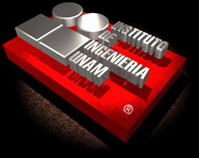

Visitante:
desde el día 10 de febrero de 1997
Hora:
Fecha:
Última actualización:
marzo de 2001
hello kids, Prime Suspectz was here.
greetz: Crime Boys, InSaNiTy ZiNe, pr0phet
silverlords, furia.br, data cha0s.
psuspectz@mail.com
x-s4nd3r / k4m1k4z3 / 0v3rk1LL / 4n1cl4t0r